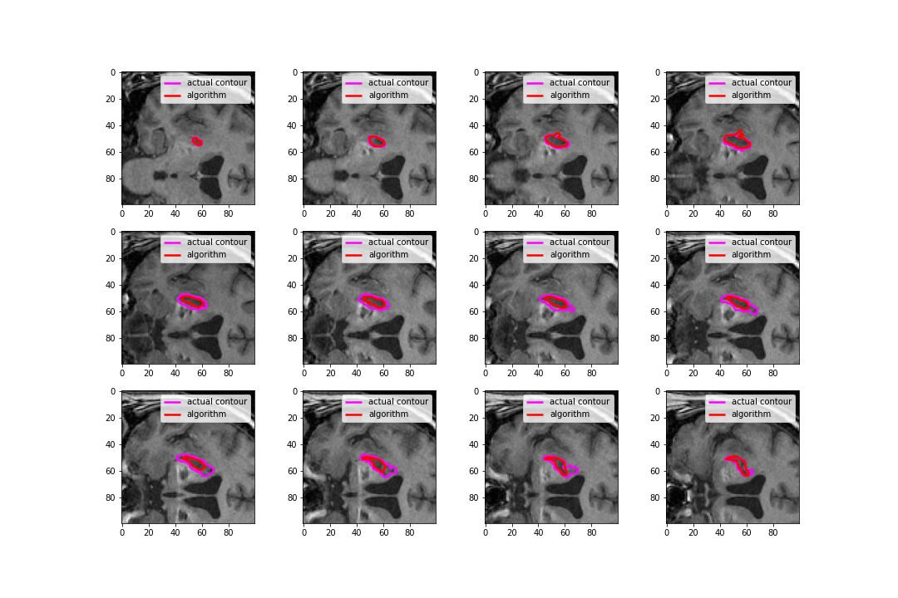
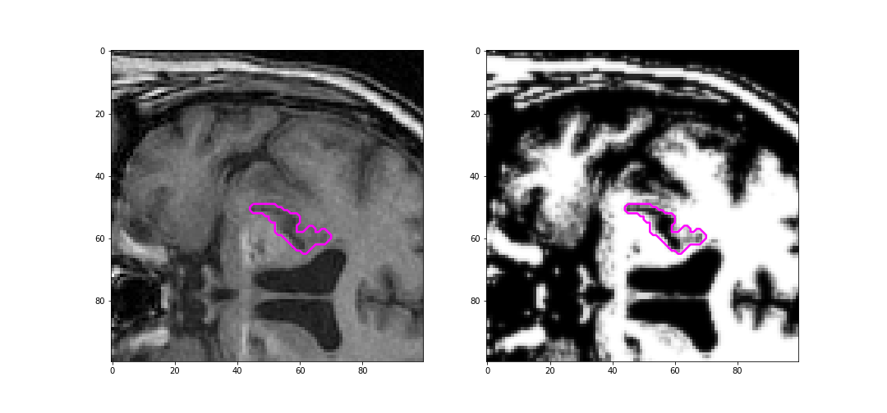
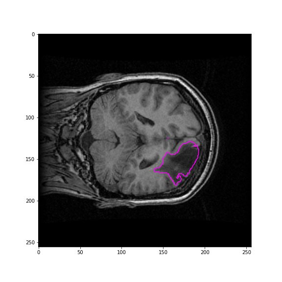
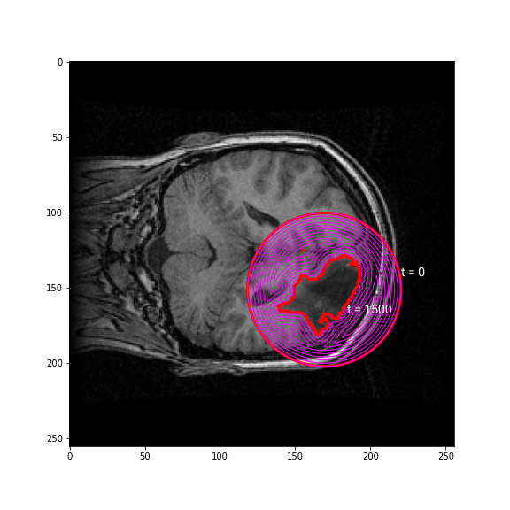
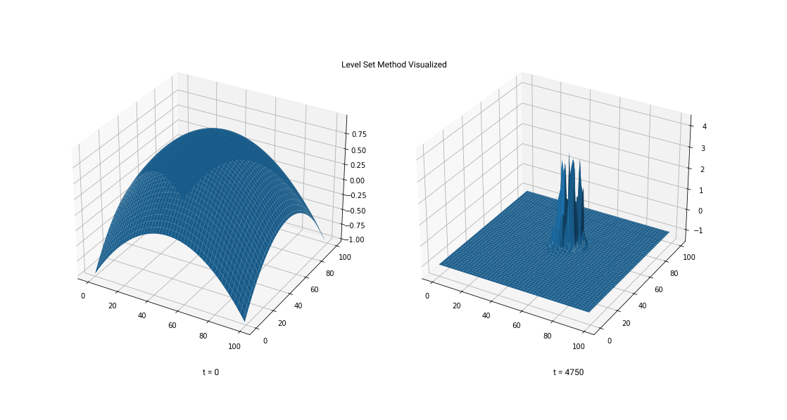

s
Capstone refers to the name of the final year design project in Queen's Engineering. The goal of this capstone project was to develop a region tracking algorithm that accurately identifies brain lesion contours from given a sequence of MRI or CT scans. Such a technology stands to benefit medical practioners and patients as expedient and reliable lesion identification allows for faster diagnoses.
In order to solve this challenge, principles from the calculus of variations were combined with the analysis of relevant lesion properties. The challenge was formulated as a optimization problem where custom "functionals" were designed to drive the corresponding Euler-Lagrange equations for the algorithm's evolution. The algorithm converges to a 2D outline which minimizes a cost function over the MRI/CT image space and does so in a manner which satisfies the partial differential equations (PDEs) of the level set method. The shape it converges to is consequently determined to be the outline of the brain lesion.
The algorithm was implemented in Python due its the high-level functionality and many third-party libraries for image analysis. A pipeline was created for the preprocessing of MRI/CT images in order to both reduce image complexity and facilitate identification. A flexible class structure for the "contour" was written and encodes all relevant information for the dynamics while promoting code-resuability. While the code performed the identification in the span of minutes, a late-stage implementation of the algorithm in Java offered significant time speedups which cut computation time in half compared to the Python version.
Depending on the complexity of the brain lesion in question, the dice coefficient (a measure of overlap between the algorithm's guess and the outline produced by a specialist) of the algorithm ranged from 0.34 to 0.77, where 1.0 is a perfect overlap. On average, the algorithm completed the identification in a span of 5-10 seconds for images of dimension ~100x100px.
Next steps include developing a GUI to facilitate dataset imports and operation by medical specialists.